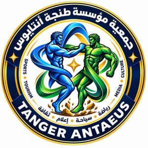

Sport
Encourager la pratique, les événements porteurs de sens et la reconnaissance des parcours sportifs remarquables.
↗
TANGER ANTAEUSUne initiative au cœur de TangerTANGER · MAROC
Le sport, le tourisme, les médias et la culture : quatre énergies pour faire grandir les initiatives citoyennes à Tanger.
Quatre domaines.
Une ambition commune.
L’ESPRIT ANTAEUS
Tanger Antaeus est une initiative associative qui réunit le sport, le tourisme, les médias et la culture autour d’une même volonté : contribuer au rayonnement de Tanger et encourager la participation citoyenne.
Notre démarche : rapprocher les acteurs locaux, valoriser les parcours et donner aux initiatives un espace de rencontre, de transmission et de coopération.
NOS DOMAINES D’ACTION
Encourager la pratique, les événements porteurs de sens et la reconnaissance des parcours sportifs remarquables.
↗Mettre en lumière les atouts et le patrimoine de Tanger, et promouvoir un tourisme responsable.
↗Valoriser les initiatives citoyennes, les métiers des médias et la mémoire audiovisuelle de la ville.
↗Soutenir les arts et le patrimoine, favoriser les rencontres entre générations et la diversité culturelle.
↗LE RENDEZ-VOUS FONDATEUR
La cérémonie de fondation est un projet de rencontre entre membres, partenaires et acteurs locaux. Un temps pour présenter notre démarche, honorer des parcours et ouvrir des perspectives de coopération.
AU CŒUR DU PROJET
PRENONS CONTACT
Une idée, une envie de contribuer ou un projet de partenariat ? Parlons-en.
contact@tangerantaeus.com ↗Tanger, Maroc · Dar Chabab Hassnouna